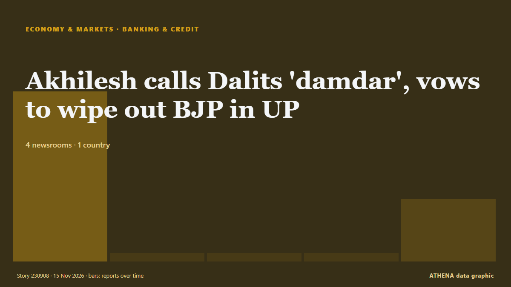

Banking & credit
SponsoredPresented by  Cybernetics and Artificial Intelligence Lab Welcome to the Cybernetics and Artificial Intelligence Laboratory, established at the Department of Business Administration of the National and Kapodistrian University of Athens. The lab is headed by Professor Dimitrios Thomakos. The lab aims to do research that can be published in top venues. Our research uses tools and methods of Artificial Intelligence, and lies in the following areas: - Forecasting - Decision making - Cyber security - Finance We are always looking forward to collaborating with exceptional students!
Cybernetics and Artificial Intelligence Lab Welcome to the Cybernetics and Artificial Intelligence Laboratory, established at the Department of Business Administration of the National and Kapodistrian University of Athens. The lab is headed by Professor Dimitrios Thomakos. The lab aims to do research that can be published in top venues. Our research uses tools and methods of Artificial Intelligence, and lies in the following areas: - Forecasting - Decision making - Cyber security - Finance We are always looking forward to collaborating with exceptional students!
| 2 Nov | 0 |
|---|---|
| 3 Nov | 0 |
| 4 Nov | 0 |
| 5 Nov | 0 |
| 6 Nov | 0 |
| 7 Nov | 1 |
| 8 Nov | 1 |
| 9 Nov | 0 |
| 10 Nov | 1 |
| 11 Nov | 2 |
| 12 Nov | 4 |
| 13 Nov | 5 |
| 14 Nov | 2 |
| 15 Nov | 1 |

Akhilesh calls Dalits 'damdar', vows to wipe out BJP in UP
Akhilesh Yadav emphasized the importance of the Dalit community in upcoming Uttar Pradesh elections. from Times of India
Israeli army arrests 10 Palestinians in raids across occupied West Bank
Israeli forces arrest 10 Palestinians, including woman, during raids in Nablus, local sources tell Anadolu. from Anadolu Agency (English)
UN welcomes Kofi Annan’s appearance on new GH¢100 Heritage Banknote
By Nana Karikari, Senior Global Affairs Correspondent The United Nations has commended Ghana’s decision to place former UN Secretary-General Kofi Annan on the country’s newly unveiled GH¢100 banknote. from GBC Ghana Online
Paraguay widens ueno bank probe with fresh charge against ex-president Peña
ASUNCION, Nov 13 - Paraguay prosecutors on Friday added criminal association to the charges facing impeached President Santiago Peña, expanding a probe into the political links surrounding the… from The Straits Times
IMF says its staff in Lebanon to discuss banking restructuring strategy
WASHINGTON: The International Monetary Fund has begun a staff mission to discuss the country’s strategy for restructuring the banking sector, IMF spokeswoman Julie Kozack said on Thursday, declining… from Arab News
CFPB Submits Final Mortgage Servicing Rule to White House
The Consumer Financial Protection Bureau (CFPB) last week sent a final rule governing mortgage servicing to the White House. from PYMNTS
Shop around to save €300 on motor insurance - research
New research from the Central Bank suggests consumers can save around €300 by shopping around for motor insurance. from RTÉ News
AfDB, AFD sign deal to boost infrastructure financing in Nigeria, 13 others
The African Development Bank Group (AfDB) and Agence Française de Développement (AFD) have signed a new memorandum of understanding (MoU) for 2026–2031, building on a partnership that has supported… from Daily Trust
UBA Foundation awards N15m scholarship to 15-year-old essay competition winner
The five winners, all girls, emerged from 20 finalists selected from about 15,000 entries submitted for the 16th edition of the competition. from Premium Times
Israeli army, illegal settlers carry out over 1,180 arson attacks in occupied West Bank
The attacks began when Palestinians set fire to an Israeli vehicle near Kibbutz Mitzpe Shalem. from The Jerusalem Post
AMLC files civil forfeiture case vs Romualdez
MANILA, Philippines—The Anti-Money Laundering Council (AMLC) has filed a civil forfeiture case that covers the bank accounts of former House Speaker Martin Romualdez, a witness told the Sandiganbayan… from Philippine Daily Inquirer